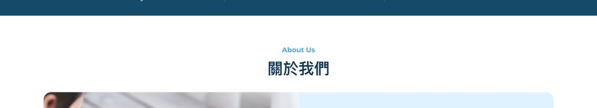
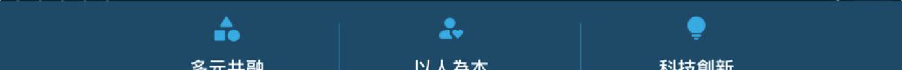
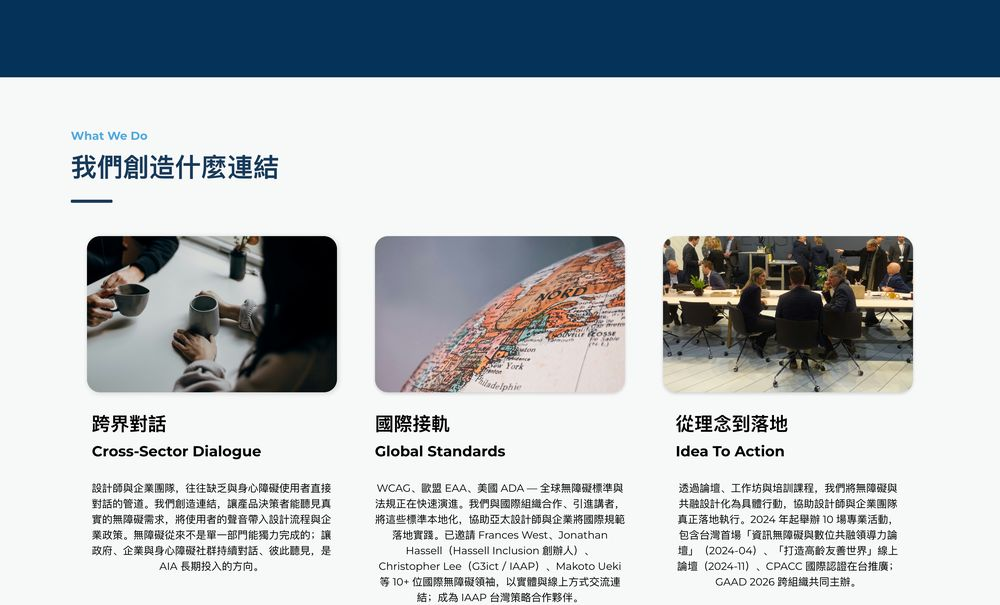
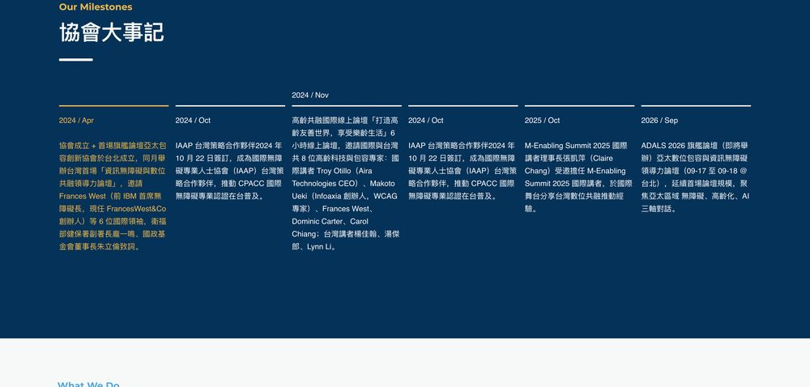
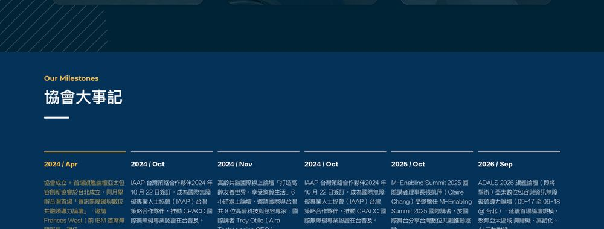
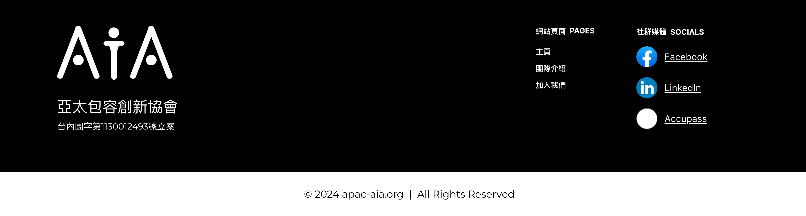

AIA 首頁 Mockup 無障礙檢視
檢視對象：20260611 AIA HomePage Mockup R2 ｜ 更新：2026-06-12 ｜ 先把 R2 看到的部分留下紀錄，方便和設計師確認，以及後續持續追蹤
這份檢視怎麼讀：整體視覺感覺很棒，版面、配色和調性都可以繼續往這條路走。下面只整理我在 R2 mockup 裡看到、跟無障礙或閱讀清楚度比較有關的地方，語氣上是想和設計端一起對齊，不是要推翻設計。也理解 R2 可能有些地方是在測試不同排法，所以先把觀察寫下來。
如果有些是刻意測試，那就先把這份文件當作一個參考即可。因為無障礙是協會很核心的議題，早一點提出會比切版後再修更省力，也比較符合 shift left design：在設計階段先把可讀性和無障礙一起納入。
| 前景色 | 背景 | 對比 | 用途 | 目前建議 |
|---|
| Sky Blue／天際藍 #19ABE4 | #E0F2FF mockup 淺藍底 | 2.3:1 | 區塊標題文字 | 建議調整（文字目標 4.5） |
| Sky Blue／天際藍 #19ABE4 | Navy／深海藍 #003B5C | 4.49:1 | 圖案 | 圖片可用；文字不建議 |
| Near Black／墨黑 #231815 | #DFF1FF mockup 淺藍底 | 15:1 | 內文 | 目前可保留 |
| #C5CBCF | #253C4A 照片遮罩 | 7:1 | 卡片白字 | 目前可保留 |
正式色名依 Brand Style Guide：Navy／深海藍 #003B5C、Sky Blue／天際藍 #19ABE4、Golden Yellow／暖陽金 #F8B62D、Near Black／墨黑 #231815、Off White／雲白 #F7F8F8。下方對比值以正式色碼與 mockup 畫面底色交叉檢查；這份記錄先用目前仍好溝通的 WCAG 2.2／2.x AA 門檻當共同語言：一般文字 4.5:1、大字 3:1、非文字圖示或 UI 3:1。
大字門檻提醒：這裡的「大字」換成網頁常用單位，大約是未加粗 ≥24px（≥1.5rem），或粗體約 ≥18.5px（約 ≥1.17rem）；沒有到這個大小，就先用一般文字 4.5:1 來看。
APCA／WCAG 3 的方向可以一起追，但目前不把它當作這份 mockup 的 pass/fail 判定；重點還是把品牌色放在適合的用途。
1. Sky Blue／天際藍區塊標題：放在淺底上需要再加深

- 優先「About Us」這類 Sky Blue／天際藍區塊標題 #19ABE4 放在白／淺藍底上，對比約 2.3:1（依背景略有差異）。作為文字會偏淡，建議改成 Navy／深海藍 #003B5C（白底約 11.8:1），視覺方向不會變，只是讓文字更容易讀清楚。
2. 同一組區塊標題可以一起調整
- 優先「JOIN US」「What We Do」「Areas of Focus」這組區塊標題看起來是同一套 Sky Blue／天際藍用色；如果放在白／淺底上，建議一起改成 Navy／深海藍 #003B5C。這比較像色票微調，不是版面方向問題。
3. 圖片可以這樣配色，文字不建議

- 可保留這裡是圖片裡的圖案配色，Sky Blue／天際藍 #19ABE4 配 Navy／深海藍 #003B5C 可以這樣用，不需要因為前面的區塊標題問題一起改掉。
- 提醒但同一組配色不建議拿來做文字，尤其是小字。Sky Blue／天際藍在 Navy／深海藍上太接近文字門檻，在白／淺底上又會太淡；文字建議改用 Navy／深海藍或墨黑。
4. 卡片內文：多行文字建議靠左，讀者比較容易接下一行

5. 協會大事記：目前比較偏好 R1 的齊頭版本
R2 現況：日期高低交錯

R1 建議：日期對齊同一線、齊頭

- 建議目前比較偏向 R1（下圖）的版本：六欄日期在同一條線上、文字靠左，每欄都從同一高度開始，掃讀比較輕鬆。R2（上圖）日期高低交錯，視線會需要逐欄重新找起點，閱讀成本比較高。不過我也理解 R2 可能是在測試另一種節奏；如果這是刻意測試，可以先當作測試方向保留，我這邊只是先把閱讀感受記錄下來。
- 後續描述文字大小目前從 mockup 不容易量準，所以先不下定論；上線前可以再確認小字是否至少有 14px、行高是否至少有 1.5。如果是主要內文，則可參考 6/12 與 Claire 和 Solomon 開會 review 時提到的 18px 方向。
6. Footer：底部顏色可否更像 AIA

- 會議紀錄6/12 早上與 Claire 和 Solomon 開會 review 時提到，最底下 AIA footer 希望品牌顏色可以和上方更一致。現在黑底白字其實看得清楚，但因為整塊都是黑色，從上方 AIA 的深藍、天藍突然轉到黑色，顏色變化有點突兀。這裡想請 Christina 評估有沒有更好的做法。
- 建議是否能請 Christina 評估幾個比較直覺的做法？例如：1. 底部主色改成 AIA 的 Navy／深海藍 #003B5C；2. 底部不要整塊都同一個顏色，可以用深藍搭配 Off White／雲白 #F7F8F8 或 Near Black／墨黑 #231815；3. Facebook／LinkedIn 圖示可以保留原本顏色，但外面加一個白色底；4. 也可以評估圖示改成單色。重點不是指定哪一種，而是讓底部看起來更像 AIA，同時不要讓社群圖示跟深藍背景互相搶。
7. 6/12 會議中 review 時也提到：網頁字體是否能再放大
- 會議紀錄6/12 與 Claire 和 Solomon 開會 review 時也有提到，需要確認網頁上的字體是否能夠確定尺寸，並且再放大。
- 說明下面這張不是硬性規格表，而是字級量尺。它參考無障礙實務來抓「至少」的方向：WCAG 不直接規定字一定要幾 px，但會要求文字可以放大、行距不要太擠、放大後不要破版。網頁設計和實作可以用 px／rem 對照來看，px 比較直覺，rem 比較方便跟著使用者設定放大。
- 對比提醒如果要用 WCAG 的「大字 3:1」來看，文字需要大約是未加粗 ≥24px（≥1.5rem），或粗體約 ≥18.5px（約 ≥1.17rem）。沒有到這個大小，就先用一般文字 4.5:1 來看。
| 建議用在哪裡 | 尺寸 | 實際大小示意 |
|---|
| 首頁大標題 | ≥40px
約 ≥2.5rem | AIA 首頁大標題 ≥40px 示意 |
| 首頁大標題較小版 | ≥32px
約 ≥2rem | AIA 首頁大標題 ≥32px 示意 |
| 區塊標題 | ≥28px
約 ≥1.75rem | About Us 區塊標題 ≥28px 示意 |
| 區塊標題較小版 | ≥24px
約 ≥1.5rem | Latest News 區塊標題 ≥24px 示意 |
| 卡片標題／區塊標題 | ≥22px
約 ≥1.375rem | 卡片標題或時間軸標題 ≥22px 示意 |
| 卡片標題較小版 | ≥20px
約 ≥1.25rem | 卡片標題或時間軸標題 ≥20px 示意 |
| 主要內文 | ≥18px
約 ≥1.125rem | 主要內文 ≥18px 示意：6/12 與 Claire 和 Solomon 開會 review 時，有提到內文可以至少抓這個大小。 |
| 輔助文字較舒服 | ≥16px
約 ≥1rem | 輔助文字 ≥16px 示意：圖片說明、時間軸描述、卡片補充文字。 |
| 輔助文字下限 | ≥14px
約 ≥0.875rem | 輔助文字 ≥14px 示意：仍需要讀者看懂的小字，不建議再小。 |
- 建議主要內文可以先以 ≥18px 為方向；輔助文字如果空間允許，建議往 ≥16px 靠近，不要只停在 ≥14px。這裡的 rem 以常見瀏覽器預設 16px = 1rem 來換算，實作時可以依網站設定再調整。
- 後續mockup 圖檔不容易精準量到每個字級，HTML 實作後，想請無障礙測試團隊與大家依實際版面再一起測試一次；後續上線前再一起確認。
現在無障礙已經做好的部分（建議保留）
- 可保留一般段落文字／卡片內文使用 Near Black／墨黑 #231815 搭配淺藍底，對比約 15:1，很清楚。
- 可保留三大價值 card 的白字壓照片：目前有藍底遮罩，抽樣最亮處 #C5CBCF／#253C4A 約 7:1，可讀性夠。
- 可保留主視覺與論壇的 Golden Yellow／暖陽金 #F8B62D 大標配 Navy／深海藍 #003B5C 約 6.58:1，目前看起來可以。後續只提醒：同款金色不要直接拿去做小字。
- 可保留純裝飾圖案：WCAG 對裝飾性圖形沒有同樣的文字對比要求，所以不用為了這點改色。
後續上線前再一起確認
- 後續「我們關注的議題」等如果仍在調整，可以先把這份文件當作提醒；等 HTML 實作後，再依實際版面一起測試。
- 後續等進入 HTML 實作／上線前，再請無障礙測試團隊與大家一起檢查標準項目：每張圖 alt（文案由協會撰寫）、文字對比、連結狀態、點擊區域至少 ≥24×24、鍵盤可操作、鍵盤焦點外框清楚且不被遮住、標題階層 h1→h2→h3、頁面區塊語意（header／nav／main／footer）、中英混排英文加 lang="en"、重複「瞭解更多」連結要能區分、手機版與放大檢視時文字不重疊、表單欄位有清楚標籤與錯誤提示。